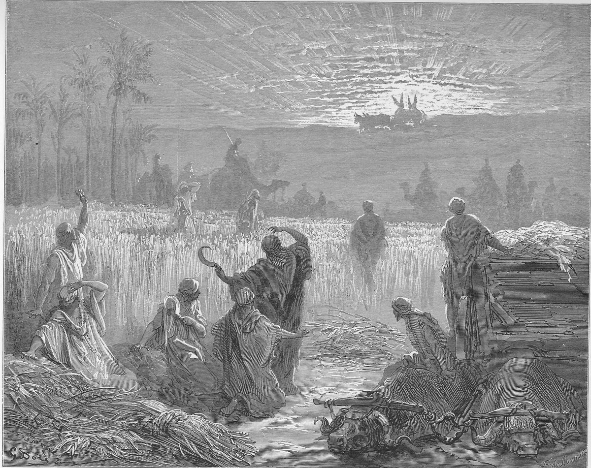

1 Samuel 6 — The Mister Translation

Doré sets the scene of verse 13, the men of Beth-shemesh reaping the wheat harvest and lifting up their eyes to see the ark. He puts the ark against the sun itself, a fitting choice for a town whose name means “house of the sun”; the camel riders behind the reapers may be meant for the Philistine lords who followed the cart to the border.

Translator's Notes — verse by verse
Seven months. “The ark of Jehovah was in the country of the Philistines seven months.” Country is sedeh, “field”, the word that will name “the field of Joshua” in verses 14 and 18, as Ruth’s family went “to sojourn in the fields of Moab” (Ruth 1:1, now on these pages). The ASV has “in the country of the Philistines seven months”; the NWT 1984 “the ark of Jehovah proved to be in the field”. The Greek adds that “their land swarmed with mice”. Josephus says the ark was “four months” with the Philistines (Antiquities 6.18, numbered 6.1.4 in Whiston).
Priests and diviners. The Philistines call “the priests and the diviners”, the qosemim whose trade Israel’s law forbids, “one who divines divinations” (Deuteronomy 18:10, now on these pages). Their counsel is Israel’s own: “do not send it away empty”, reqam, the word of the exodus promise that Israel “will not go out empty-handed” from Egypt (Exodus 3:21) and of the pilgrim who “shall not appear before the face of Jehovah empty” (Deuteronomy 16:16, both now on these pages). What they must pay is an asham, the guilt offering of one who “sins through error against the holy things of Jehovah” (Leviticus 5:15, now on these pages): a payment for handling what belonged to God. The ASV has “return him a trespass-offering”; the Geneva “give unto it a sin offering”; the NWT 1984 “return to him a guilt offering”. The Greek adds to “then you will be healed” a second promise, that atonement will be made for them.
Five golden tumours, five golden mice. “By the number of the lords of the Philistines: five golden tumours and five golden mice.” In verses 4 and 5 the written text again has ’ofalim and the margin teḥorim, as in chapter 5; in verses 11 and 17 the written text itself has teḥorim. The mouse, akhbar, is one of the unclean “swarming things” of the law, “the mole-rat, the mouse” (Leviticus 11:29, now on these pages); the word stands in six verses of the Hebrew Bible, that one, four in this chapter, and Isaiah 66:17. The Hebrew has had no mice until now; the Greek put them into the plague of 1 Samuel 5:6. The NWT 1984 has “five golden piles and five golden jerboas”; the KJV “Five golden emerods, and five golden mice”. The Hebrew shifts person in mid-sentence, “one plague was on them all and on your lords”, and this translation keeps the shift. Josephus turns the tumours into five golden statues, one for each city, offered as thanks (Antiquities 6.10, numbered 6.1.2 in Whiston).
“Give glory to the God of Israel.” The kavod that went into exile from Israel (1 Samuel 4:21, now on these pages) is now something the Philistines must give, as Joshua told Achan, “give glory, please, to Jehovah, the God of Israel” (Joshua 7:19, now on these pages). “Perhaps he will lighten his hand”: the verb is from qalal, “be light”, the opposite of the heavy hand of 5:6 and 5:11. The last phrase reads “from off your god”, taking the plural form as Dagon, whom the Ashdodites called “Dagon our god” (5:7). The ASV has “from off you, and from off your gods”; the NWT 1984 “Perhaps he will lighten his hand from off YOU and YOUR god”.
“Why should you make your heart heavy?” “… as Egypt and Pharaoh made their heart heavy.” The verb is kaved again, the verb Exodus uses when Pharaoh “made his heart heavy” (Exodus 8:11; 9:34, both now on these pages). “When he had dealt harshly with them” is the verb of “how I dealt harshly with Egypt” (Exodus 10:2) and of Balaam’s “you have made a fool of me” (Numbers 22:29, both now on these pages). The Philistines who spoke of “the gods who struck Egypt with every kind of plague” (1 Samuel 4:8) now argue from the end of that story: “did they not send them away, and they went?” The ASV has “Wherefore then do ye harden your hearts”; the NWT 1984 “why should YOU make YOUR heart unresponsive”.
A new cart, unyoked cows. “One new cart, and two milk cows on which no yoke has come”: the words of the law’s red cow, “on which no yoke has come” (Numbers 19:2), and close to its heifer “that has never drawn in a yoke” (Deuteronomy 21:3, both now on these pages), animals never put to common use. Milk cows is parot ‘alot, “cows giving suck”, and the Hebrew runs on one sound, ‘alot … ‘alah … ‘ol, “giving suck … come … yoke”. The ‘agalah, “cart”, is spelled with the letters of ‘eglah, “heifer”, the animal of Deuteronomy 21:4. The “calves” are in Hebrew “their sons”, shut up at home behind them: cows that have never pulled a cart, with their calves penned behind them, should turn for home. The ASV has “two milch kine, on which there hath come no yoke”; the NWT 1984 “two cows that are giving suck”. Josephus adds a crossroads, a place “where three ways met”, where the cows were left to choose (Antiquities 6.11, 13, numbered 6.1.2–3 in Whiston).
The box. The golden articles go “in a box at its side”, an argaz; the word stands in three verses of the Hebrew Bible, all in this chapter, and its sense comes from these verses alone. The Greek leaves it untranslated, as a word of Hebrew sound (ergab, vv. 11 and 15). The KJV has “in a coffer by the side thereof”; the NWT 1984 “into a box at the side of it”; the Douay “into a little box”.
The test, and “a chance”. “If it goes up by the road to its own territory, to Beth-shemesh, it is he who has done us this great evil; but if not … it was a chance that happened to us.” Chance is miqreh, the word of Ruth, who “by chance … chanced upon the portion of the field belonging to Boaz” (Ruth 2:3, now on these pages). “His hand that touched us” is naga‘, “touch”. The ASV has “it is not his hand that smote us; it was a chance that happened to us”; the NWT 1984 “it was not his hand that touched us; an accident it was that happened to us”.
Straight, lowing. “And the cows went straight on the road”: the verb is from yashar, “straight, upright”, in an unusual form; this form stands in one verse of the Hebrew Bible. They go “lowing as they went”, calling for the calves behind them, and “did not turn aside to the right or to the left”, the words the law uses for keeping the commandment, “so that he does not turn aside from the commandment, right or left” (Deuteronomy 17:20; compare 28:14 and Joshua 23:6, all now on these pages). The lords follow “as far as the border of Beth-shemesh”. The ASV has “lowing as they went, and turned not aside to the right hand or to the left”; the NWT 2013 “mooing as they went”. Josephus says the cows took the right road “as if someone were leading them” (Antiquities 6.13, numbered 6.1.3 in Whiston).
The wheat harvest. “Now Beth-shemesh was reaping the wheat harvest in the valley”: the whole town in the fields, at the season of the feast of weeks, “the firstfruits of the wheat harvest” (Exodus 34:22, now on these pages). Beth-shemesh, “house of the sun”, stands on Judah’s border (Joshua 15:10) and was one of the priests’ towns (Joshua 21:16, both now on these pages), and Levites are on hand in verse 15. The ASV has “they lifted up their eyes, and saw the ark, and rejoiced to see it”; the NWT 1984 “they gave way to rejoicing at seeing it”.
The field of Joshua, the great stone. The cart stops “in the field of Joshua the Beth-shemite”, a man of the town, not Moses’ successor; field is the sedeh of verse 1. “There was a great stone there”, an even that the next verses use as a table for the ark. The townsmen split the cart for firewood and offered the cows “as a burnt offering to Jehovah”. The law asks for “a male without blemish” when a burnt offering comes from the herd (Leviticus 1:3, now on these pages); the narrator says nothing about the cows. Verse 15 then steps back to the unloading: “the Levites took down the ark of Jehovah, and the box”, and the town “sacrificed sacrifices”, zevach. The ASV has “they clave the wood of the cart, and offered up the kine for a burnt-offering unto Jehovah”; the Douay “laid the kine upon it a holocaust”.
For Ashdod one. The five golden tumours are counted city by city, “for Ashdod one, for Gaza one, for Ashkelon one, for Gath one, for Ekron one”. Joshua’s list of the five lords begins with Gaza (Joshua 13:3, now on these pages); this one begins with Ashdod, where the ark went first. The mice are counted differently, “by the number of all the cities of the Philistines belonging to the five lords, from fortified city to open-country village”: verse 4 has five mice, and this verse counts them by every town; the text does not reconcile the two. The KJV has “both of fenced cities, and of country villages”; the NWT 1984 “from the fortified city to the village of the open country”.
“The great Abel.” The Hebrew continues “and as far as the great Abel, on which they set down the ark”. Abel is avel, usually “meadow”, but the adjective “great” is feminine, the gender of even, “stone”, and the great stone has stood in verses 14 and 15. The ASV has “even unto the great stone”; the KJV “even unto the great stone of Abel”; the Douay “to the great Abel (the stone)”. The Greek reads “the great stone” outright. This translation keeps the Hebrew’s “Abel”. Its letters, אבל, are also those of ’evel, “mourning”, and of the next verse’s “the people mourned”, the pun Genesis makes at Abel-Mizraim, “This is a heavy mourning for Egypt” (Genesis 50:11, now on these pages). “To this day” is ‘ad; read ‘ed, “witness”, it becomes the NWT 1984’s “is a witness down to this day”.
Gazing at the ark. “Because they had gazed at the ark of Jehovah”: the Hebrew is “saw in” the ark, the verb of seeing with a preposition that fixes the eyes on something, as Hagar would not “see the death of the child” (Genesis 21:16, now on these pages). The law had warned the Kohathites that “they shall not go in to see the holy things, even for a moment, lest they die” (Numbers 4:20, now on these pages). The ASV has “because they had looked into the ark of Jehovah”; the NWT 1984 “because they had looked upon the ark of Jehovah”. Josephus says the men struck were “not worthy to touch the ark, for they were not priests” (Antiquities 6.16, numbered 6.1.4 in Whiston).
Seventy men, fifty thousand men. The Hebrew sets the two numbers side by side with no “and”, the smaller first: “seventy men, fifty thousand men”. Fifty thousand is more than a country town could hold, and the shelf divides over it. The KJV has “fifty thousand and threescore and ten men”; the NWT 1984 keeps the Hebrew’s order, “seventy men—fifty thousand men”; the NWT 2013 prints “50,070”; the NIV has “putting seventy of them to death”. Josephus counts seventy (Antiquities 6.16). The Greek keeps both numbers and opens the verse with something the Hebrew lacks, “and the sons of Jechoniah did not rejoice among the men of Beth-shemesh”. Some medieval Hebrew manuscripts are reported, from Benjamin Kennicott’s eighteenth-century collation, to lack “fifty thousand men”. This translation prints the Hebrew as it stands, the two numbers set apart by dashes.
“This holy God.” “The people mourned”, vayit’abbelu, the letters of the Abel of verse 18. “Who is able to stand before Jehovah, this holy God?” Qadosh is the word of Joshua’s warning, “he is a holy God” (Joshua 24:19, now on these pages). “And to whom shall he go up from us?” can be read of Jehovah or of the ark; the Hebrew has only the verb. The ASV has “to whom shall he go up from us?”; the NWT 1984 “to whom will he withdraw from off us?”.
Kiriath-jearim. The men of Beth-shemesh send to Kiriath-jearim, one of the four Gibeonite towns Israel swore to spare (Joshua 9:17, now on these pages): “come down, bring it up to yourselves”, words that fit a town up in the hills above the valley. The chapter ends with the messengers on the road; the next verse brings the ark to the house of Abinadab “on the hill”, where it stays twenty years (1 Samuel 7:1–2, now on these pages). The ASV has “come ye down, and fetch it up to you”; the NWT 1984 “Come down. Take it up to yourselves.”
Patterns worth carrying forward
Where this translation keeps the words exact and distinct: “guilt offering” for asham, as in Leviticus 5; “empty” for reqam; “tumours” for ’ofalim / teḥorim, as in chapter 5 and Deuteronomy 28:27; “mice” for akhbar; “give glory” for kavod, as in Joshua 7:19; “lighten” for qalal against the “heavy” hand and heart of kaved; “dealt harshly”, as in Exodus 10:2; “on which no yoke has come”, as in Numbers 19:2; “a box” for argaz; “a chance” for miqreh, as in Ruth 2:3; “the great Abel”, with the stone in the note; and “seventy men — fifty thousand men”, as the Hebrew stands.
Echoes paid. The golden tumours and golden mice promised in chapter 5 arrive; the Philistines who feared “the gods who struck Egypt” (4:8) quote the end of the exodus story to one another; the hand that was “heavy” on Ashdod (5:6, 11) is asked to “lighten”; and the glory that went into exile (4:21) is given back.
Echoes planted. The ark at Kiriath-jearim for twenty years (1 Samuel 7:1–2, now on these pages), and David’s “new cart” for the same ark (2 Samuel 6:3).
Next in this book: 1 Samuel 7 — the men of Kiriath-jearim bring the ark to the house of Abinadab; after twenty years Samuel gathers Israel at Mizpah, Jehovah thunders against the Philistines, and Samuel sets up a stone and names it Eben-ezer.